Manuel de conception de l'Infobase Santé
Table des matières
Bibliothèque de composantes
Sections
-
Boutons de personnalisation
InteractionBoutons permettant de modifier le graphique : trier, passer de la liste aux tuiles, changer la taille, passer d'absolu à relatif, etc.
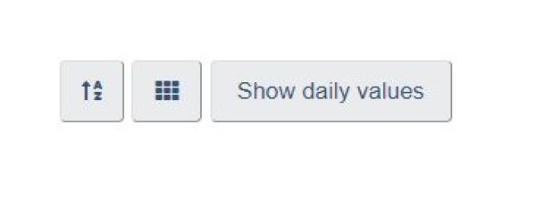 -
Carte
DistributionUne carte est une représentation visuelle de données géographiques, allant de simples limites géographiques à des informations statistiques complexes.
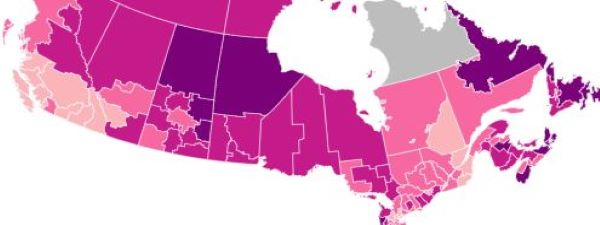 -
Carte thermique
Partie à toutUne carte thermique est une représentation visuelle de données qui utilise la couleur pour montrer les valeurs de deux variables ou plus.
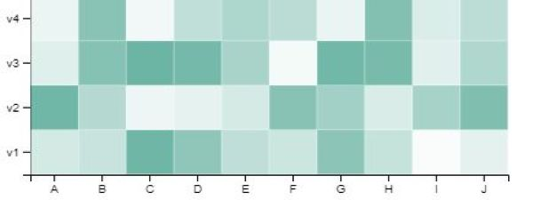 -
Diagramme à barres
Montrer une relationUn diagramme à barres est une représentation visuelle de données qui utilise des barres pour montrer les valeurs relatives de différents points de données.
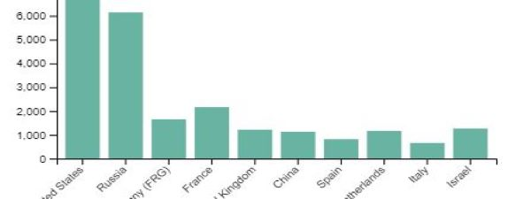 -
Diagrammes circulaires et diagramme en anneau
Partie à toutUn diagramme circulaire est une représentation visuelle de données qui utilise des tranches pour montrer les tailles ou proportions relatives de différents points de données.
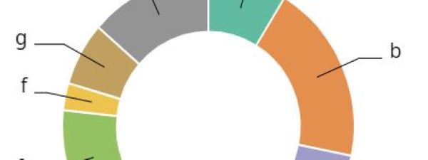 -
Graphique linéaire
Suivre une tendanceUn graphique linéaire est une représentation visuelle des données qui utilise une série de points de données connectés pour montrer les valeurs de différents points de données dans le temps.
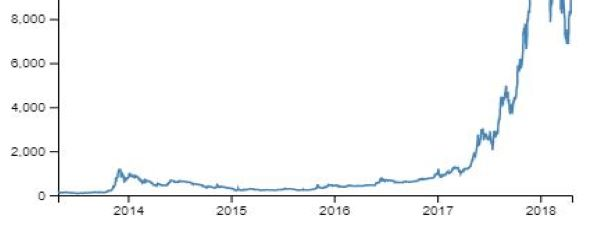 -
Histogramme
DistributionUn histogramme est une représentation visuelle des données qui utilise des barres pour montrer la fréquence ou le nombre d'observations dans une plage de valeurs donnée.
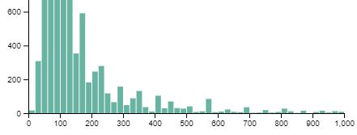 -
Indicateurs clés
Valeur uniqueLes tuiles d'indicateurs clés sont utilisées pour attirer l'attention sur les renseignement clés du produit de données.
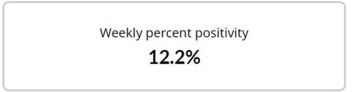 -
Interface à onglets
InteractionLes interfaces à onglets permettent de diviser un produit de données complexe en plusieurs sections.
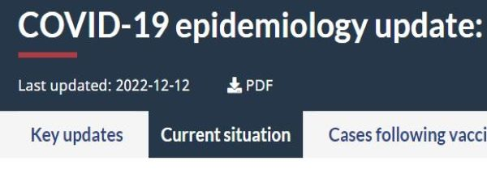 -
Nuage de points
Montrer une relationUn nuage de points est une représentation visuelle des données qui utilise des points ou des marqueurs pour montrer les valeurs de deux variables ou plus.
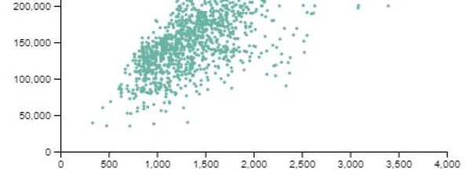 -
Produits connexes
DécouvertePermet à l'utilisateur de découvrir d'autres produits de données de santé connexes.
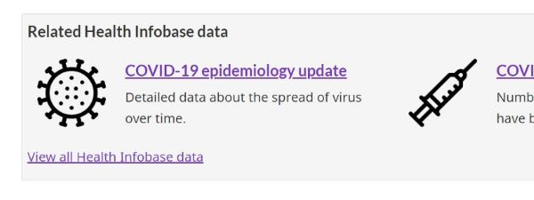 -
Sélecteur chronologique
InteractionLes sélecteurs chronologiques permettent aux utilisateurs de voir les données pour une période spécifique.
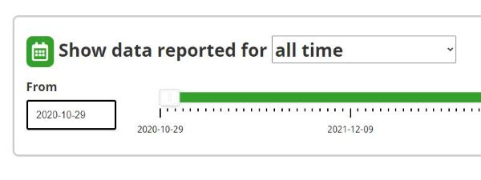 -
Sélecteur déroulant
InteractionLes sélecteurs déroulants permettent aux utilisateurs de choisir entre différentes options.
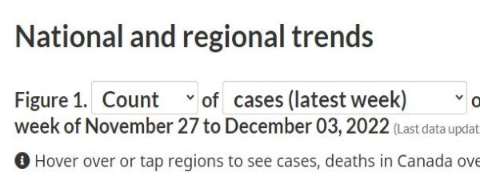
- Date de modification :